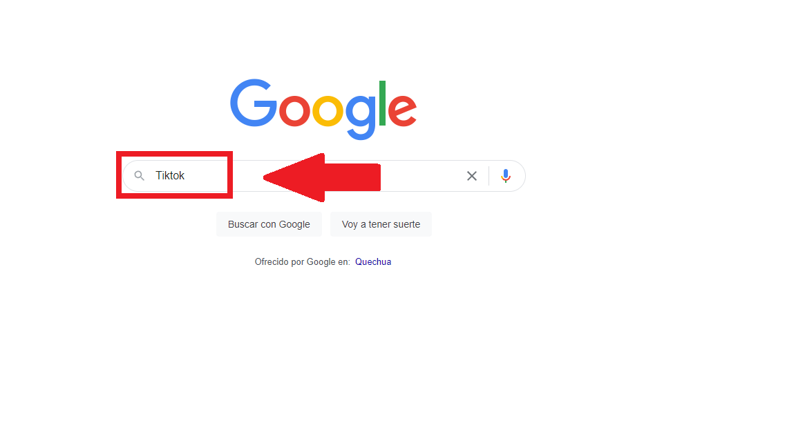
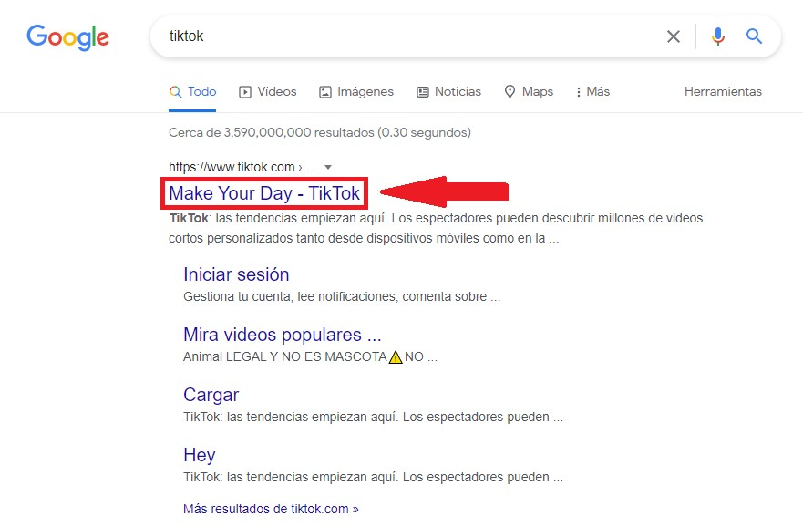
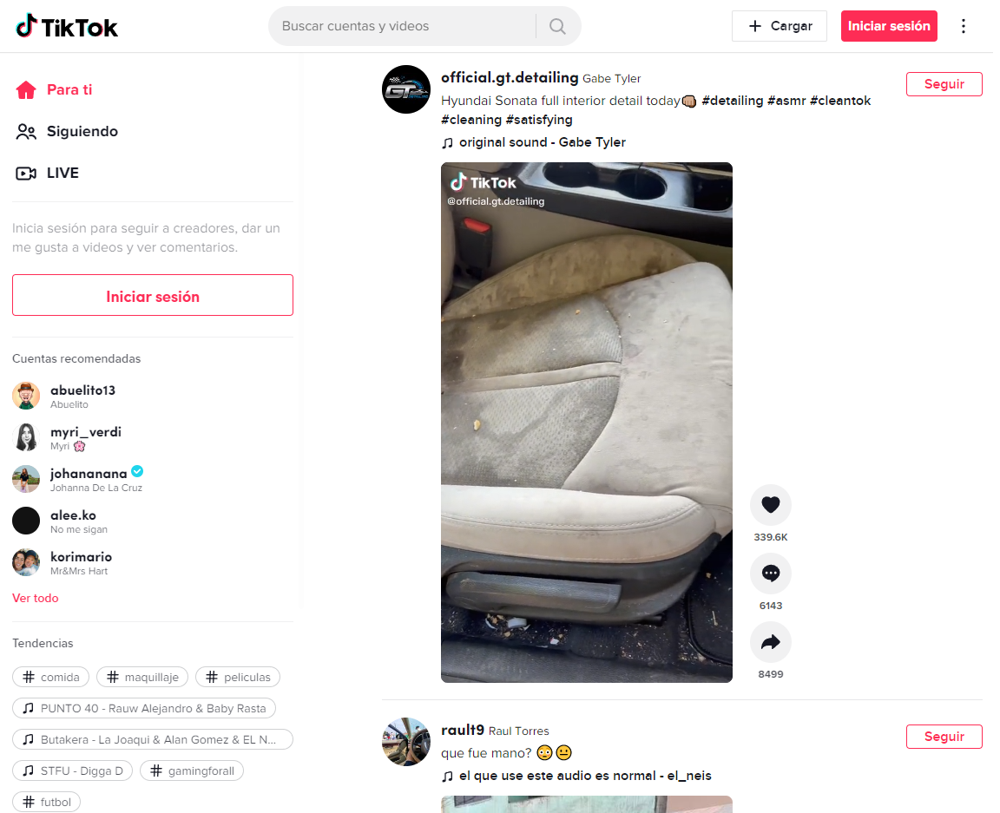
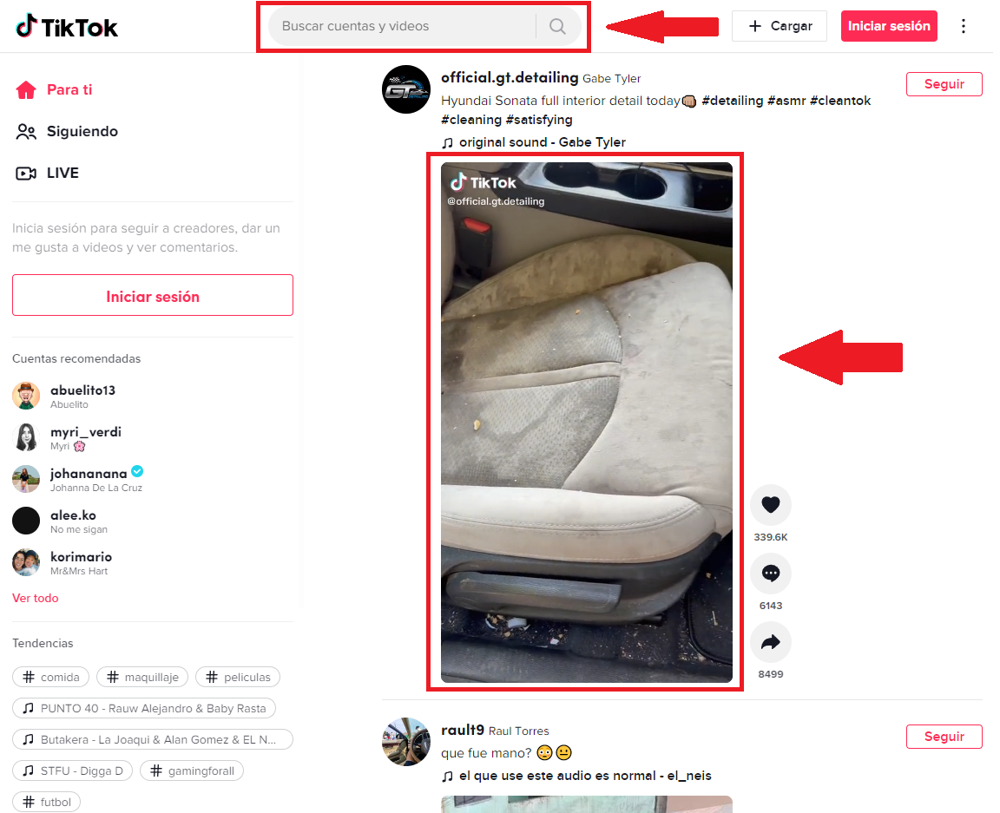
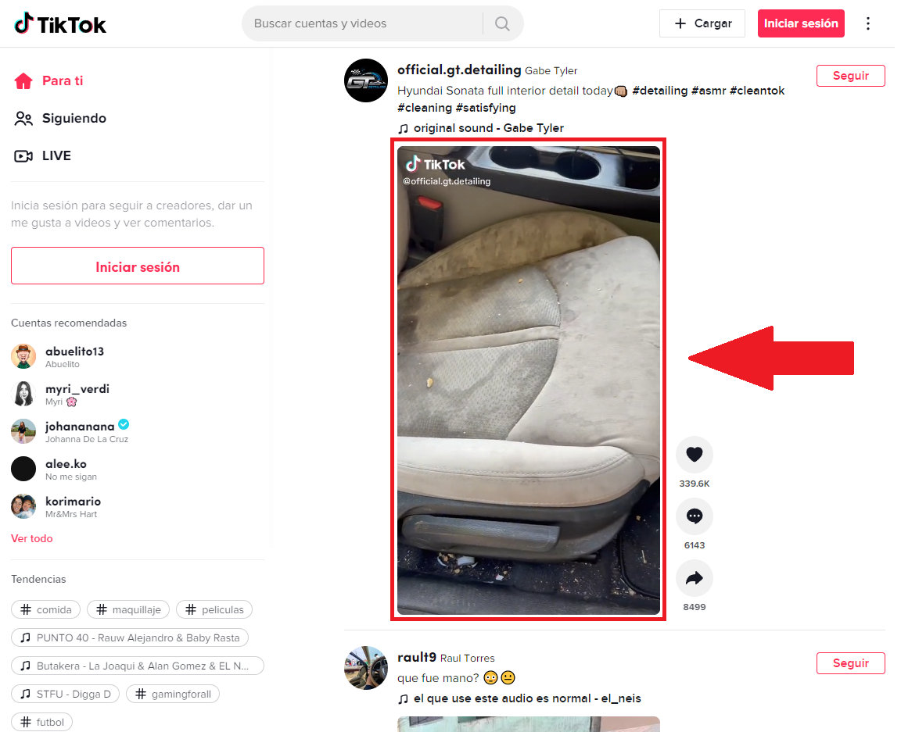
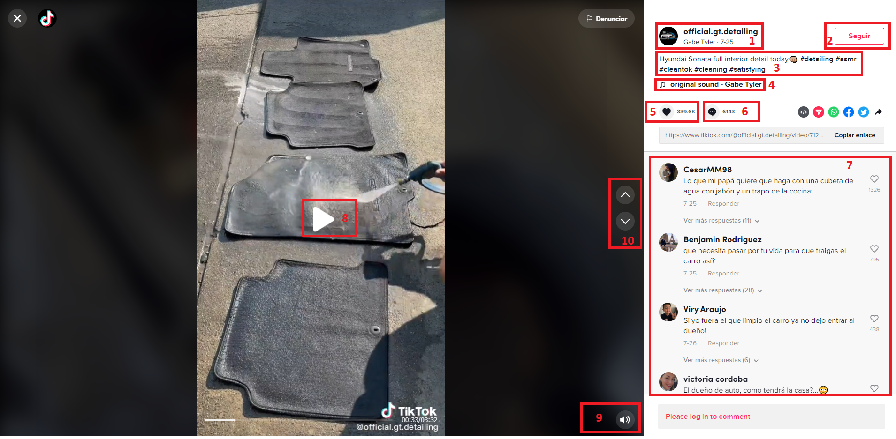
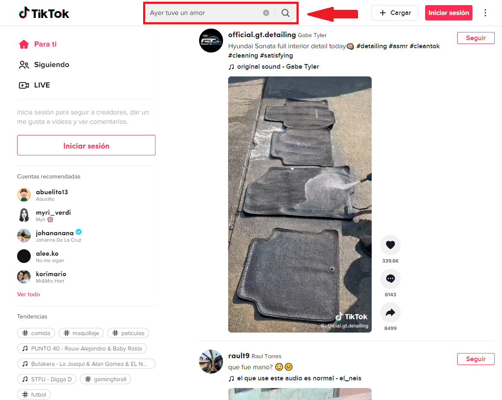
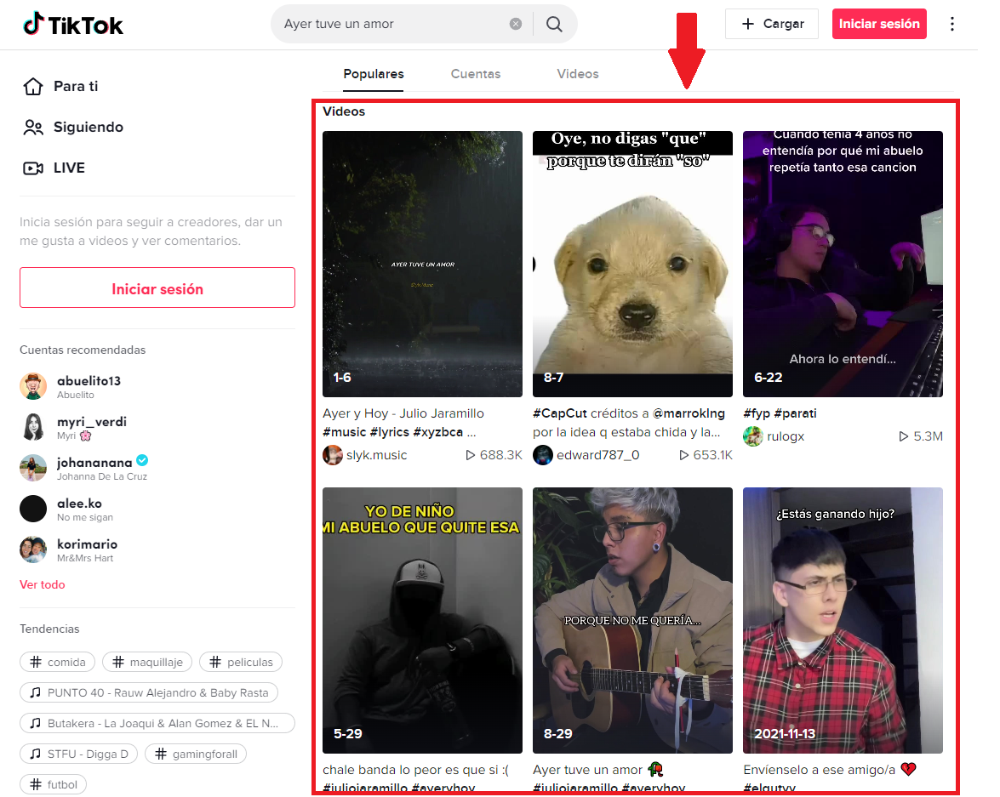
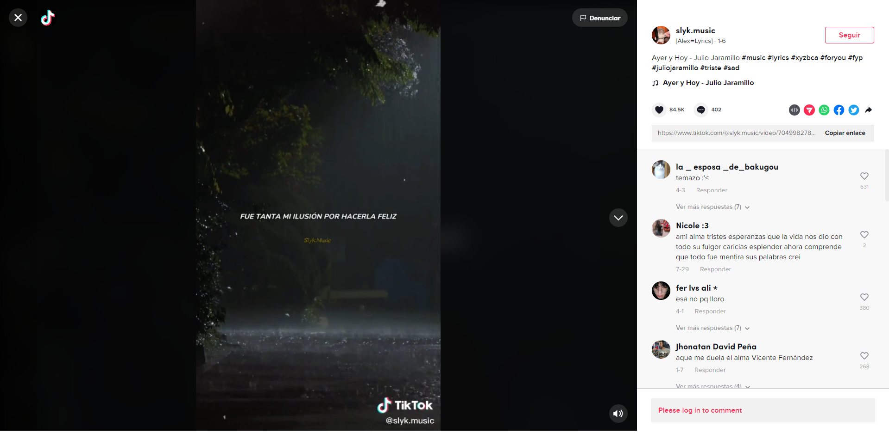

TikTok
Pasos para usar Tiktok

Primer paso: Entrar al navegador de Google y luego escribir la palabra Tiktok.

Segundo paso: Darle un click a la palabra de Tiktok para que luego, te redireccione a la página principal donde podrás encontrar videos cortos variados.

Tercer paso: Bienvenido al sitio web de TikTok. Ya puedes empezar a disfrutar de la gran cantidad de videos que la página te ofrece.

Cuarto paso: En la barra de búsqueda del Tiktok tendrás la facilidad de poder buscar el vídeo que quieres mirar. Así mismo si deseas puedes empezar a mirar los vídeos que la plataforma ya te ofrece sin necesidad de utilizar el buscador tal y como se muestra señalado en el rectángulo rojo del medio en la foto. Te mostraré algunos ejemplos usando ambos métodos.
Ejemplos
Primer Ejemplo

Da click en cualquier video que te aparezca, en este ejemplo nosotros estamos clickeando el video que se encuentra en el recuadro rojo.

Perfecto ahora podras notar que la página ha cambiado pero no te precoupes aca te explicaremos con la ayuda de una leyenda que es lo que estas visualizando:
- Esto es el nombre de la cuenta del usuario al que le pertenece el vídeo.
- Este es el botón de seguir para que los videos de ese usuario te aparezcan más amenudo.
- Es una introducción o comentario del autor indicando de qué trata el video.
- Algunos videos tienen música incluida, en este apartado te aparece el nombre de la canción y el autor de ella.
- Botón de Me gusta, al darle click fomentarás que tiktok te muestre contenido parecido a lo que estás viendo.
- Botón de Comentar, como su nombre lo indica te va a permitir hacer un comentario del video.
- Aca podrás ver los comentarios de otras personas o usuarios que hacen sobre el video.
- Boton de Play, sirve para reproducir el video.
- Aca puedes ajustar el volumen del audio del video a tu gusto.
- Por último con estos botones podras cambiar al video siguiente ó al video anterior dando click en las flechas indicadas.
Segundo Ejemplo

Perfecto ahora utilizaremos el otro método para ver videos. Primero mueve el cursor a la parte superior donde dice "Buscar cuentas y videos" y dale click, y escribe lo que desees ver, para este ejemplo nosotros usaremos la frase "Ayer tuve un amor", asi que tipeamos con el teclado esa frase y a continuacion presionamos la tecla Enter del teclado o le damos click en la lupa que se encuentra al lado.

Excelente ahora, como puedes observar, hay una gran cantidad de videos para escoger. Escoge el que más llame tu atención, para ello solamente tienes que darle click a cualquier video y empieza a disfrutar del contenido. Recuerda que puedes seguir bajando con el scroll del mouse para poder escoger entre una mayor cantidad de videos.

Genial, nosotros escogimos el primer video mostrado y como podrás darte cuenta, la forma como se ve es exactamente igual al del primer ejemplo. Felicidades ya sabes ahora como utilizar Tiktok a un nivel básico para que empieces a ver los videos que te gusten.